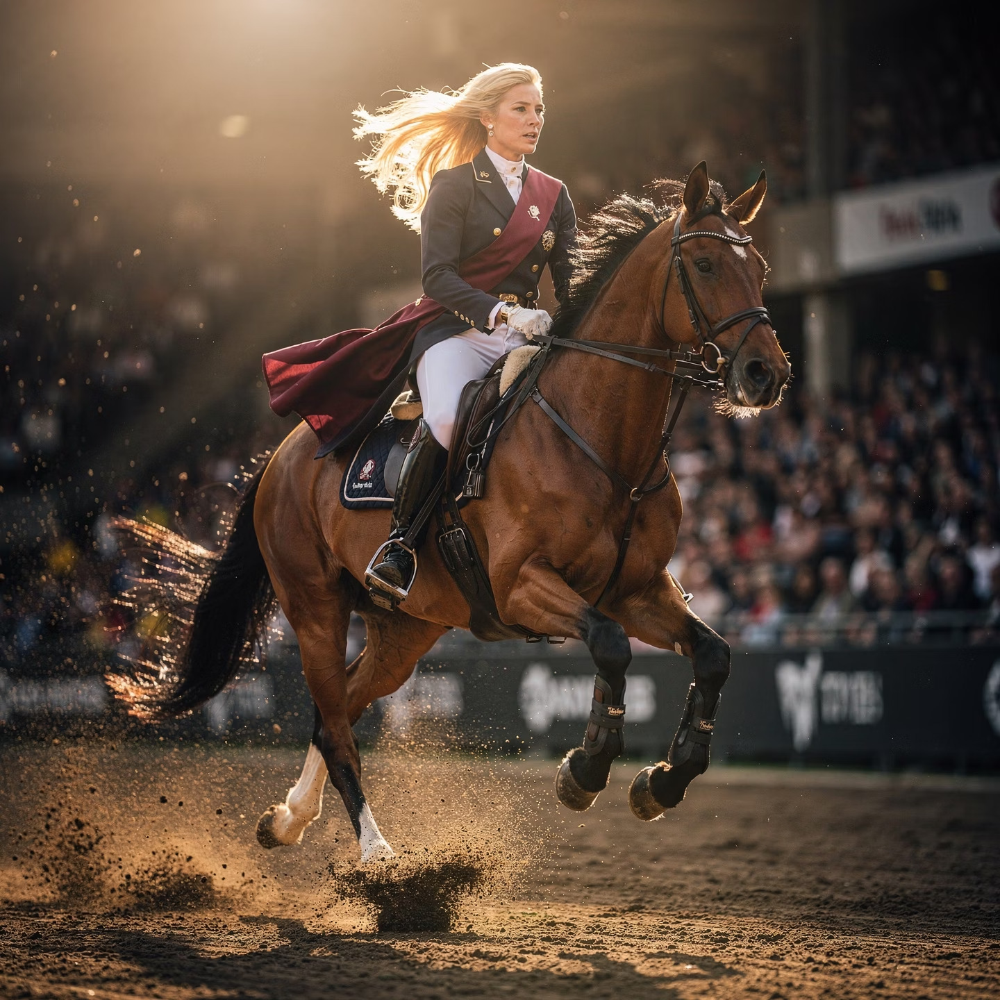
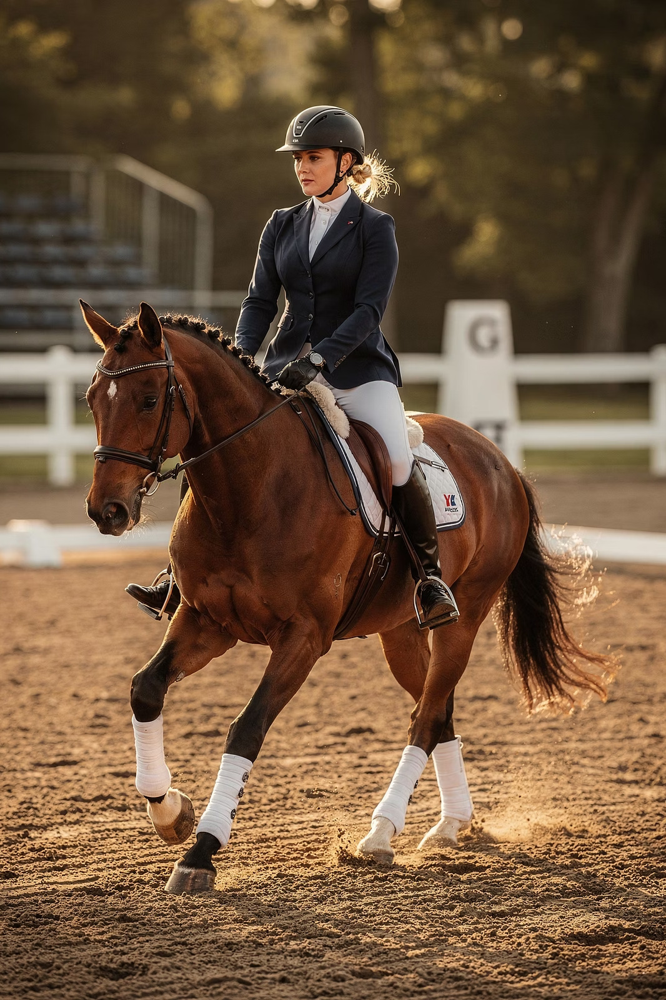
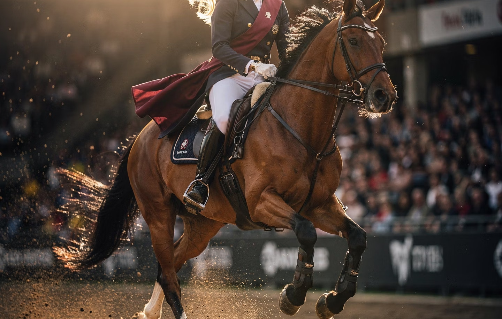
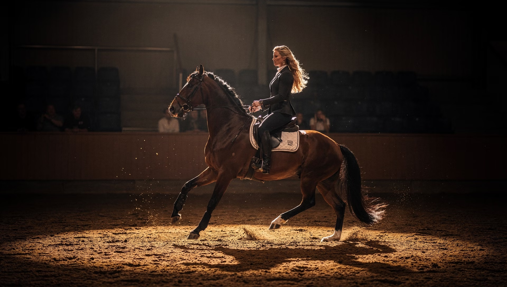

Vous galérez depuis des mois
Votre cheval vous dépasse à pied. Il est concentré un jour, impossible le lendemain. Vous avez essayé des cours, des stages, des vidéos — rien ne tient.

Académie en ligne · Francophone
Depuis 20 ans, on m'appelle quand tout le monde a baissé les bras. Je vous transmets l'ordre — celui qui manque entre les stages, les vidéos et les coachs — pour que votre cheval vous regarde, vous écoute, et avance avec vous.
Si vous lisez ceci
Votre cheval vous dépasse à pied. Il est concentré un jour, impossible le lendemain. Vous avez essayé des cours, des stages, des vidéos — rien ne tient.
Depuis une chute, ou un cheval que vous ne comprenez plus, vous avez perdu confiance. Personne autour de vous ne sait quoi vous proposer.
Vous venez d'accueillir un jeune cheval, ou un cheval au passé compliqué. Vous savez que ce que vous posez maintenant restera. Vous n'avez pas le droit à l'erreur.
Le commun à toutes ces personnes : on leur a dit que ce n'était plus possible.
Que leur cheval était "comme dans la lune". Qu'elles n'étaient pas faites pour ça.
C'est faux. Ce n'est jamais le cheval. Ce n'est jamais vous. C'est l'ordre.
Catherine — pourquoi rien ne tient malgré tout ce que vous faites · 8 min


À propos
J'ai commencé avec les chevaux qu'on me confiait quand plus personne ne savait quoi en faire. Des chevaux qu'on parlait de vendre. De castrer. D'abandonner.
J'ai travaillé sur des tournages, des spectacles, j'ai été Horse Manager dans un domaine 5 étoiles pendant 4 ans, et on m'a fait traverser le Maroc, la Belgique, le Canada, les Émirats pour des chevaux que personne d'autre n'arrivait à toucher.
Au fil des années, j'ai compris une chose : ce que les gens appellent "un cheval impossible", c'est presque toujours un cheval à qui on parle dans le désordre. Pas une question de méthode. Une question d'ordre.
« Bandolero, c'était un étalon ibérique qu'on m'a amené après un accident au Maroc. C'est lui qui m'a fait comprendre que toutes les méthodes existantes — éthologie, horsemanship, désensibilisation — étaient correctes. Mais qu'elles arrivaient dans le mauvais ordre. »Voir la méthode
La méthode
Ce n'est pas une énième méthode à empiler sur les précédentes. C'est un code de lecture qui replace dans l'ordre ce que vous savez déjà — et qui rend lisible ce que votre cheval essaie de vous dire.
Avant de toucher au licol, c'est votre posture, votre respiration, votre intention que votre cheval lit. La boule au ventre, il la sent depuis le paddock. On commence par ça. Toujours.
Pas l'obéissance — l'attention. Quand votre cheval vous regarde avant de regarder le bruit dehors, vous savez que la base est posée. Rien ne se construit avant cette étape.
Des règles claires, non négociables, posées sans tension et sans conflit. C'est ce qui transforme un cheval "compliqué" en partenaire fiable, dans le box comme à pied.
Une fois les trois premières étapes solides, les réponses deviennent justes, fines, sans force. À partir d'ici : la longe libre, la liberté, et même la scène si vous le voulez.
Quand on inverse ces étapes — et 8 cavaliers sur 10 commencent par la précision — on construit sur du sable. Ce qui tient un jour s'effondre le lendemain.
Le programme
Selon où vous en êtes avec votre cheval, vous pouvez commencer par un mini-cours ciblé, ou intégrer l'Académie complète pour un accompagnement sur 12 mois.
Accès immédiat
297 € par mini-cours
Des programmes courts, ciblés sur un problème précis. Vous prenez celui qui correspond à votre situation aujourd'hui, vous travaillez à votre rythme, et vous repartez avec un résultat concret en quelques semaines.
Sur candidature · 6 places / mois
Accompagnement 12 mois
1 997 € les 12 mois · facilités possibles
L'accompagnement complet : tous les mini-cours inclus, plus un cadre hebdomadaire avec moi pour que vous ne restiez jamais bloquée. C'est le chemin entier, du premier regard de votre cheval jusqu'à la liberté et la scène.
Catalogue
Choisissez celui qui parle de votre situation aujourd'hui. Vous pouvez en prendre un, ou plusieurs. Si vous rejoignez l'Académie ensuite, le prix est déduit.
Jeune cheval
Le bon ordre pour ne pas installer de défauts. Sécurité, respect, manipulation, sortie en main.
297 €
En savoir plusConfiance
Remonter sans forcer. Reprendre le contrôle au sol d'abord. Sortir de la peur, étape par étape.
297 €
En savoir plusCheval émotif
Plastique, bâche, bruit, mouvement. Un cheval stable émotionnellement, sans le casser.
297 €
En savoir plusRespect au sol
"J'existe." Le cheval qui vous dépasse, qui pousse, qui n'écoute pas — par où on reprend la main.
297 €
En savoir plusVie quotidienne
Préparer le cheval aux gestes du quotidien sans bagarre. Pour vous, pour le pro qui intervient.
297 €
En savoir plusLonge & distance
Cercle, allures, rappel, changement de direction. La préparation à la liberté.
297 €
En savoir plusElles ont franchi le pas
TODO — témoignage Solène : phrase verbatim sur le changement vécu après 2-3 mois.
TODO — témoignage Jennifer : phrase verbatim, plutôt orientée confiance retrouvée.
TODO — témoignage Wassila ou Meryem : phrase verbatim sur la relation au quotidien.
FAQ
En 20 ans, je n'ai jamais vu un cas sans solution. Ce qu'on prend pour un cas particulier, c'est presque toujours un ordre mal posé — pas un cheval irrécupérable. Si vous avez essayé tout ce qu'on vous a proposé sans résultat durable, c'est précisément le profil pour lequel j'ai construit ce travail.
Comptez les heures que vous avez déjà passées à essayer des choses qui n'ont rien donné. L'ordre fait gagner du temps — vous arrêtez de tourner en rond. Les mini-cours sont faits pour ça : un problème, un résultat, sans noyer sous la théorie.
Le Code du Cheval n'est pas un niveau, c'est un chemin. Il sert aussi bien à quelqu'un qui vient d'accueillir un jeune cheval, qu'à une cavalière qui plafonne depuis des années, ou à une personne qui reprend après une chute. C'est l'ordre qui change, pas le niveau requis.
Les mini-cours règlent un problème ciblé, à votre rythme, en accès immédiat. L'Académie est un accompagnement complet sur 12 mois, sur candidature, qui inclut tous les mini-cours et un cadre hebdomadaire avec moi pour que vous ne restiez jamais bloquée. Si vous démarrez par un mini-cours et que vous rejoignez ensuite l'Académie, votre achat est déduit.
Parce que je n'accueille que 6 nouvelles personnes par mois. Je suis sur le terrain le reste du temps, avec des chevaux et des cavalières. L'appel diagnostic de 30 minutes sert à vérifier que c'est aligné — pour vous comme pour moi. Si ce n'est pas le bon moment, je vous le dis, et je vous donne 2 ou 3 ajustements à tester seule.
30 minutes en visio. Vous me racontez votre situation, votre cheval, ce que vous avez essayé. Je vous donne mon avis honnête : soit c'est le bon moment pour entrer dans l'Académie, soit ce n'est pas pour vous aujourd'hui — et dans les deux cas, vous repartez avec un diagnostic clair.

Et maintenant
Si quelque chose dans cette page vous a parlé, prenons le temps d'en discuter en visio. Deux issues possibles : soit c'est aligné et on avance, soit ce n'est pas pour vous — et je vous donne 2 ou 3 ajustements concrets à tester seule.
Réserver mon appel diagnostic